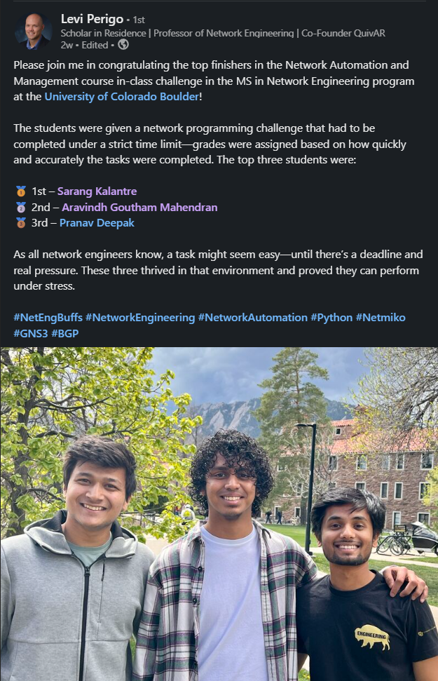

These projects demonstrate real-world applications of network automation by leveraging Python libraries like Netmiko and NAPALM, along with Ansible for configuration management. Device templates are dynamically generated using Jinja2, with continuous testing through Jenkins pipelines. Network performance and health are monitored using SNMP, Prometheus, and Grafana, enabling efficient, scalable, and reliable infrastructure management.
Projects
- Flask Web App: Developed a Flask-based web application to simplify network device configuration, replacing the traditional CLI-based approach. Initial SSH setup is done manually on the devices, after which all configurations can be managed through the application’s GUI. The backend leverages Netmiko and NAPALM Python libraries to automate and apply configurations seamlessly across devices.
- Jinja2: Used Jinja2 templating to dynamically generate network device configurations based on variables such as hostname, interfaces, IP addresses, and routing protocols. This approach ensures consistency, reduces manual errors, and allows for scalable and reusable configuration templates across multiple devices and environments.
- Jenkins: Integrated Jenkins to automate testing and task execution upon every GitHub push. Each code change triggers predefined test scripts, enabling continuous integration, version control, and unit testing. This setup ensures early detection of issues and maintains reliability across network automation workflows.
- Monitoring: Implemented network monitoring using SNMPv2 to collect data from network devices. Prometheus was used as the time-series database to scrape and store the metrics, while Grafana provided dynamic and customizable dashboards for visualizing device performance, traffic, and system health in real time.
- Troubleshooting: Designed an automated troubleshooting workflow to enhance network visibility and reduce diagnostic time. The system checks for SSH accessibility across devices, retrieves their current running configurations, and performs a diff analysis to compare against previous configurations. This allows for quick identification of changes and potential issues, making the troubleshooting process faster and more efficient.
- Netconf: Implemented NETCONF (Network Configuration Protocol) to manage and automate network device configurations over a secure and structured XML-based interface. NETCONF enables programmatic access to device settings, supports configuration validation and rollback, and integrates seamlessly with modern network automation workflows for improved reliability and consistency.
Recognition
2nd Place - Network Automation Challenge
Earned 2nd place in a competitive, time-constrained Network Automation and Management challenge as part of the MS in Network Engineering program at the University of Colorado Boulder. The challenge evaluated real-time problem solving, scripting, and device configuration using tools such as Python, Netmiko, and GNS3.
